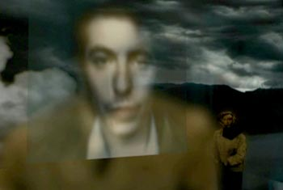
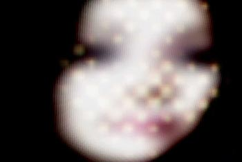
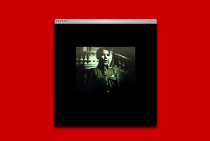
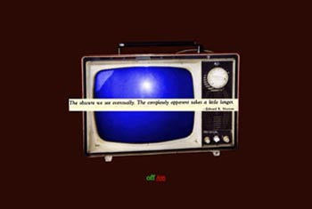

|
| |
Oct
- Nov 2004
|  |  |
| INTERVALS.
2004 COMMISSIONED FOR TURBULENCE.ORG WEB BASED AUDIO/VIDEO. RUNNING TIME 8 MINUTES |
ALBUM.
2004 FROM THE NET.BASED EXHIBITION ENTITLED "PAUSE" WEB BASED AUDIO/VIDEO. RUNNING TIME 7 MINUTES |
|  |  |
UNEXPECTED LAUNCHING OF HEAVY OBJECTS. 2003 A PROJECT CONTRIBUTION TO "WARTIME" A PLANET WIDE COLLECTIVE EXHIBITION BY DIGITAL ARTISTS REFLECTING ON WAR. WEB BASED AUDIO/VIDEO. RUNNING TIME 2 MINUTES |
THE
GUIDE. 1995 IMAGE AND TEXT BASED NARRATIVE. |
Peter Horvath
Website: bio:: Peter Horvath works in video, sound, photo-based and new media. Camera in hand since age 6, he inhaled darkroom fumes until his late 20‘s, then began exploring art forms in time based media. Immersed himself in digital technologies at the birth of the Web, co-founded 6168.org, a site for net.art, and adopted techniques of photo-montage which he uses in his net based and 2D works. Exhibitions include the Whitney Museum Of American Art‘s Artport, the 17th Stuttgarter Filmwinter (Stuttgart, Germany) FILE 2004 (Sâo Paulo, Brazil), Video Zone International Video Art Biennial (Tel Aviv, Israel) the Thailand New Media Art Festival (Bangkok, Thailand) the Musée national des beaux-arts du Québec (Québec City, Canada) as well as venues in New York, Tokyo, London, and numerous net.art showings. He is a founding member of the net.art collective Hell.com. He likes to consider a future when high bandwidth will be free. |
|